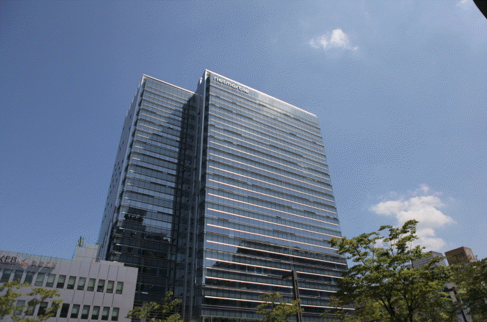

‘Great Game Culture Company’를 지향하며, 재미있는 게임으로 전세계인의 삶을 즐겁게 하기 위해 역량 있는 일류 인재들이 모인 기업입니다. 2000년 설립 이래 넷마블은 탄탄한 개발력과 창의적 사업마인드로 세계 최초로 “퍼블리싱” 비즈니스 사업 모델을 도입하고, "리니지2레볼루션", ‘모두의마블’, ‘세븐나이츠’, ‘레이븐’, ‘몬스터길들이기’, ‘마블:퓨처파이트’, ‘이데아’ , ‘스톤에이지’, "마블 컨테스트 오브 챔피언스", "쿠키잼", "해리포터:호그와트미스터리"등의 인기 모바일 게임과 대표 스포츠 게임인 ‘마구마구’ 등 다수의 PC 온라인게임을 서비스 하며, 전세계 게임 이용자들에게 새로운 게임세상의 재미를 전파하고 있습니다. 또한, 넷마블은 게임 역사를 이끌어 온 경험과 개발력, 사업가 정신과 서비스 노하우를 바탕으로 게임문화를 선도하는 위대한 기업이 되기 위해 최선을 다하고 있습니다. 2017년 게임업계 사상 첫 연매출 2조원 돌파의 신화를 이룩해 낸 넷마블은, 2017년 매출액 2조 4,248억(전년 대비 61.6%증가), 영업이익 5,096억(전년 대비 72.9%증가)을 기록하며 큰 폭으로 지속적 성장세를 이어가고 있습니다. 뿐만 아니라 넷마블은 국내를 넘어 글로벌 시장 공략에도 성공적 성과(해외매출비중 54%, 2017년 기준)를 보이고 있습니다. 넷마블은 해외 우수 개발사 인수(카밤 밴쿠버스튜디오, 잼시티)에 성공하여 글로벌 경쟁력을 확보하였고, 디즈니, 마블 등의 파트너사와 꾸준한 협업을 통해 게임을 개발하는 등 다각도의 해외시장 공략에 노력을 기울이고 있습니다. 괄목할 만한 성장으로 게임문화 산업을 선도하는 넷마블은, 최고가 될 의지를 가진 일류 인재들에게 항상 열려 있는 기업입니다. 현재보다 앞으로가 더 기대되는 게임문화 기업, 전세계 모든 사람들이 느끼는 재미를 찾아, Global No.1을 향해 일류 인재와 함께 성장하는 곳, 바로 넷마블의 현재이자 미래입니다.

넷마블은 내달 3일까지 넷마블컴퍼니 임직원 전체를 대상으로 재택근무 일정을 추가 연장키로 했다고 26일 밝혔다.
넷마블 측 관계자는 '사업상 어려운 환경에도 불구하고 사회적 거리두기를 통한 코로나19 위기 극복에 적극 동참하고 임직원들의 건강과 안전을 최우선으로 고려해 재택근무를 추가 연장키로 했다”며 “향후 대응 또한 코로나19 TFT를 통해 결정할 예정”이라고 말했다.
한편 넷마블은 코로나19 확산에 따른 위기 극복을 위해 최근 계열사로 편입된 코웨이와 20억원 성금을 출연해 전국재해구호협회 희망브리지에 일괄 기부했다.